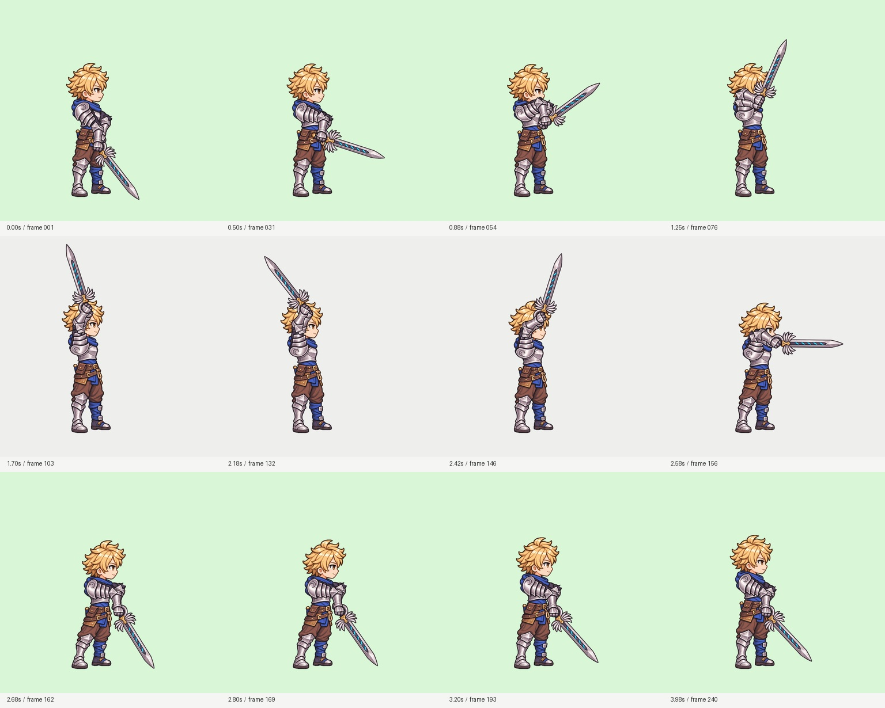
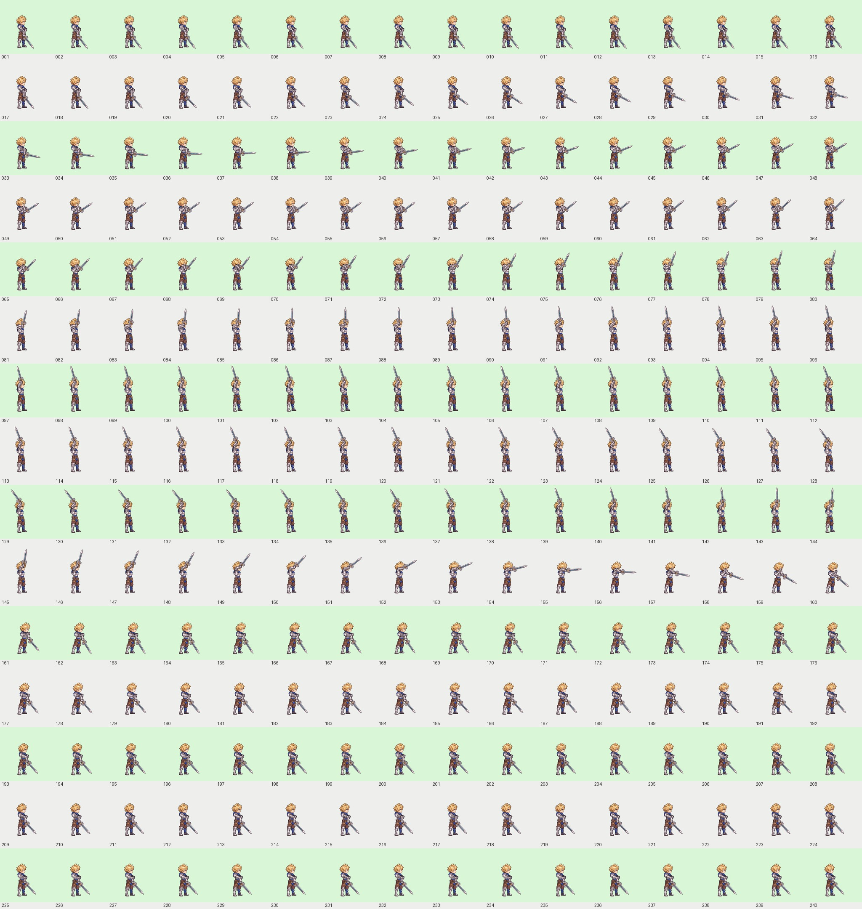

금발 전사 · 양손 검 내려치기
오른쪽 정측면 · 4.000초 · 60fps · 총 240프레임 · 1024 × 1024 · 실제 알파 투명
배경 선택은 미리보기에만 적용됩니다. MOV·WebM 원본에는 배경이 없습니다. 전장은 프로젝트의 실제 전장 이미지에 합성한 확인용 화면입니다. 게임 실행 코드에는 아직 연결하지 않았습니다.
제작 방식: 캐릭터디자인2 작업 폴더의 오른쪽 금발 전사 원본 → 내장 image_gen으로 동작 파츠 제작 → 팔 관절·손잡이·검 회전과 몸통 움직임을 계산한 2D 애니메이션. 영상 생성 모델을 사용한 결과는 아닙니다. 고정된 발과 한 개의 검을 유지합니다.

주요 자세 · 밝은 초록/회색 배경 전체 프레임 확인

240프레임 전체 확인표